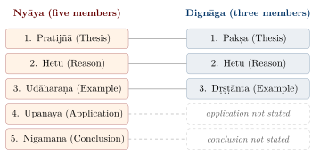
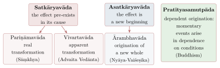

Chapter 13: Comparing the Schools — Knowledge, Error, Debate and Conclusions¶
The Centrality of Pramāṇa
pramāṇato ’rthapratipattau pravṛttisāmarthyād arthavat pramāṇam
A means of knowledge is true to its object, since, when an object is known through a means of knowledge, the activity that follows is successful.
— Vātsyāyana, Nyāya Bhāṣya, opening sentence
13.1 Introduction: Why Epistemology Became Central¶
A distinguishing feature of classical Indian philosophy, especially from the middle of the first millennium CE, is the primacy accorded to epistemology. Above all after Dignāga, a philosopher was expected to state the pramāṇas (means of valid knowledge) through which any claim could be justified, and the question “How do you know?” became foundational.
Every school defined its accepted pramāṇas, and much of the inter-school debate revolves around which pramāṇas are valid, how they function, and what they can reveal. This chapter compares the epistemological theories of the major schools (Matilal 1986; Mohanty 2000; Phillips 2012). The earlier chapters have described each school’s means of knowledge in its own setting; this chapter does not repeat those accounts. It asks instead what the schools’ disagreements about knowledge, error and debate show when they are set side by side, and it ends with the volume’s conclusions.
13.2 What Counts as a Means of Knowledge¶
Indian epistemology works with a set of related terms: valid cognition (pramā), usually defined as cognition that is true to its object (yathārtha); its means or instrument (pramāṇa); its object (prameya); and the knower (pramātṛ). Every school accepted this frame, which is why their disagreements were genuine disagreements and not merely different vocabularies. Table 13.1 sets out which means of knowledge each school accepts, in the terms of the Brahmanical list.
| School | Pratyakṣa | Anumāna | Śabda | Upamāna | Arthāpatti | Anupalabdhi |
| perception | inference | testimony | comparison | postulation | non-apprehension | |
| Cārvāka | \(√\) | – | – | – | – | – |
| Bauddha | \(√\) | \(√\) | – | – | – | – |
| Vaiśeṣika | \(√\) | \(√\) | – | – | – | – |
| Sāṃkhya | \(√\) | \(√\) | \(√\) | – | – | – |
| Yoga | \(√\) | \(√\) | \(√\) | – | – | – |
| Nyāya | \(√\) | \(√\) | \(√\) | \(√\) | – | – |
| Jaina | \(√\) | \(√\) | \(√\) | – | – | – |
| Prābhākara | \(√\) | \(√\) | \(√\) | \(√\) | \(√\) | – |
| Bhāṭṭa | \(√\) | \(√\) | \(√\) | \(√\) | \(√\) | \(√\) |
| Advaita Vedānta | \(√\) | \(√\) | \(√\) | \(√\) | \(√\) | \(√\) |
| Schools accepting | 10 | 9 | 7 | 4 | 3 | 2 |
Simplifications: later Cārvākas accepted inference about perceptible things; the Jains classify knowledge as pratyakṣa and parokṣa, counting inference and testimony as forms of the latter and treating comparison as a form of recognition; Buddhists after Dignāga accept two pramāṇas only.
The table can be read as a series of reductions. Each school that accepts fewer means of knowledge than its neighbour does so by arguing that the extra ones are really forms of those it keeps. The Buddhists and Vaiśeṣikas reduce testimony to inference: a statement is believed because one infers that its speaker is reliable. Nyāya reduces postulation to inference, and the Prābhākara Mīmāṃsakas reduce non-apprehension to perception of the bare locus (Chapter 6). The Jains, with a scheme of their own, absorb comparison into recognition (Chapter 11). The early Cārvāka, finally, reduces everything to perception and challenges even inference (Chapter 9).
What drives the reductions is not a love of economy but what each school needs a means of knowledge to do. Testimony is the clearest case. For the Mīmāṃsā, dharma is known from the Veda and from nothing else, so testimony must be an independent means of knowledge and the Veda’s authority must not depend on any inference about its author. For Nyāya, testimony is independent but its authority does depend on its speaker, which is why Nyāya needs God. For the Buddhists, the Buddha’s word is authoritative because what he taught about liberation can be tested and is not found deceptive, so testimony can be treated as a kind of inference. The dispute about how many means of knowledge there are is in large part a dispute about the authority of scripture, conducted in the language of epistemology.
13.3 Perception and Conceptual Construction¶
Perception is the one means of knowledge accepted in some form by every school, the sceptic Jayarāśi apart, though the Jains’ canonical scheme counts ordinary sense-cognition as indirect. The schools differ greatly on its nature (Table 13.2).
| School | Theory of Perception |
|---|---|
| Nyāya | Perception arises from sense-object contact; grasps real objects with their qualities and universals; both nirvikalpaka and savikalpaka admitted |
| Vaiśeṣika | Similar to Nyāya; emphasises role of manas (mind) as coordinating sense data |
| Sāṃkhya | Perception is the function of buddhi (intellect) when modified by the object through the senses; Puruṣa is the witness |
| Yoga | Adds yogaja-pratyakṣa (yogic perception) as a valid form of direct knowledge |
| Mīmāṃsā (Bhāṭṭa) | Perception grasps real objects with their universals; the cognition itself is not perceived but known by postulation from the “knownness” of its object |
| Mīmāṃsā (Prābh.) | Perception involves a tripuṭī (triple relation): knower, knowledge, known |
| Advaita | Perception occurs when the antaḥkaraṇa-vṛtti (mental modification) takes the form of the object; the consciousness limited by this vṛtti is perceptual knowledge |
| Bauddha | Perception is non-conceptual (kalpanā-apoḍha); grasps the unique particular (svalakṣaṇa) |
| Jaina | In the canonical scheme, sense-knowledge (mati) is technically indirect, and only avadhi, manaḥparyaya and kevala are direct; later logicians call ordinary perception “empirical direct knowledge” (sāṃvyavahārika pratyakṣa) |
| Cārvāka | Perception is the primary (for early Cārvākas the sole) pramāṇa |
The decisive line runs between Dignāga and almost everyone else. For Dignāga and Dharmakīrti perception is free from conceptual construction: it grasps only the unique, momentary particular, and everything general — “cow”, “blue”, “pot” — is added by thought (Chapter 10). Nyāya, Mīmāṃsā and the Jains replied that determinate perception grasps real things with real properties; the Naiyāyikas granted an initial non-conceptual stage, but denied that what follows it is construction. The disagreement is not about psychology. It is about whether universals and wholes are real, for if perception presents them they must be; and that is why the theory of perception and the theory of universals were argued together (Section 13.9). The Śaiva non-dualists, adopting the Buddhist analysis of momentary awareness while rejecting its conclusion, gave the dispute a further turn: for Utpaladeva every perception already contains a reflective awareness (vimarśa) that is the root of concept and language (Chapter 12).
13.4 Inference Compared¶
Inference is accepted by every school except the early Cārvākas, but they disagree on its form and its ground. Nyāya states an argument for others in five members, Dignāga in three, in which the example already contains the universal rule, and Dharmakīrti in effect in two (Figure 13.1).

The deeper disagreement concerns how pervasion is known. For Nyāya it holds between real universals and is known from repeated observation without counter-example, supported by suppositional reasoning; for Dharmakīrti it rests on an essential connection of identity or causation; for the Jains it is known by a separate means of knowledge, tarka. Each answer was shaped by the Cārvāka challenge (Section 9.3.1), and each reflects its school’s metaphysics: Nyāya’s realism about universals, the Buddhists’ analysis of causation among momentary particulars, and the Jains’ readiness to recognise as many means of knowledge as there are kinds of cognition.
13.5 The Validity of Knowledge: Svataḥ and Parataḥ¶
A central debate concerned whether the validity of a cognition is intrinsic or extrinsic — whether it arises from, and is known by, the same conditions that produce the cognition itself, or from and by something further (Table 13.3).
| School | Origin of Validity | Origin of Invalidity |
|---|---|---|
| Mīmāṃsā | Intrinsic (svataḥ) | Extrinsic (parataḥ) |
| Advaita Vedānta | Intrinsic | Extrinsic |
| Nyāya | Extrinsic (parataḥ) | Extrinsic (parataḥ) |
| Buddhism (as classified by Brahmanical doxographers) | Extrinsic | Intrinsic |
| Sāṃkhya (as classified by Brahmanical doxographers) | Intrinsic | Intrinsic |
| Jainism | Arises from external conditions; known intrinsically in familiar cases and extrinsically in unfamiliar ones | The same |
The positions are clearer when one asks what each school was afraid of. The Mīmāṃsaka’s fear was a regress: if every cognition needed a second cognition to confirm its validity, that second cognition would need a third, and no one would ever know anything; so validity must be intrinsic, and only invalidity needs a further cause, a defect or a contradicting cognition. The doctrine also protected the Veda, which has no author whose defects could undermine it (Chapter 6). The Naiyāyika’s fear was credulity: if every cognition were valid until refuted, error would be as authoritative as truth until someone happened to notice it. Nyāya therefore held that validity is established extrinsically, typically by the success of the action a cognition prompts, and answered the regress objection by saying that in familiar cases we do not in fact seek confirmation, and that the confirming cognition need not itself be confirmed for the first to be valid. The Jain position, that validity is known intrinsically in familiar cases and extrinsically in unfamiliar ones, is less a compromise than a recognition that both sides had described part of our practice.
13.6 Theories of Error (Khyātivāda)¶
How is false cognition possible? The question — usually discussed through the example of a shell mistaken for silver — produced a set of theories (Table 13.4) that show the schools’ metaphysics with unusual clarity.
| Theory | School | Explanation of Error |
|---|---|---|
| Akhyāti | Prābhākara Mīmāṃsā | Failure to discriminate two valid cognitions, a perception of “this” and a memory of silver |
| Anyathākhyāti | Nyāya | A real object is perceived as other than it is, with the attributes of something real elsewhere |
| Viparītakhyāti | Bhāṭṭa Mīmāṃsā | Misapprehension of one real thing as another (close to the Nyāya view) |
| Ātmakhyāti | Yogācāra Buddhism (as presented by opponents) | The mind projects its own content as external |
| Asatkhyāti | Madhyamaka Buddhism (as presented by opponents) | What is cognised in error is non-existent |
| Anirvacanīyakhyāti | Advaita Vedānta | The object of error is neither real nor unreal, but indescribable |
| Satkhyāti (Yathārthakhyāti) | Viśiṣṭādvaita | All cognition apprehends something real; silver is really present in the shell in a small measure |
| Apūrṇakhyāti | Pratyabhijñā (Abhinavagupta) | An incomplete manifestation, in which the silver is not fixed in its place |
The pattern is easy to see once the table is read against the earlier chapters. Realists explain error without admitting any unreal object: for the Prābhākara nothing false is ever cognised, only two true cognitions are not told apart (Chapter 6); for Nyāya the silver is real, but elsewhere; for Rāmānuja it is real even here, since every element contains every other in some measure. Idealists and anti-realists locate the false object in the mind or in nothing. The Advaitin’s “indescribable” silver is the hinge of his whole system, since the same status is then claimed for the world (Chapter 7). A theory of error is thus a test of a metaphysics: it must explain how the mind can present what is not there, without either making error impossible or making all cognition erroneous.
13.7 The Tradition of Debate¶
Indian philosophy has a long tradition of formal debate (śāstrārtha), shared by Brahmanical, Buddhist and Jain thinkers, in which a proponent (vādin) states a thesis, an opponent (prativādin) challenges it, arguments must be supported by recognised means of knowledge, and an umpire (madhyastha) or assembly (pariṣad) decides. The Nyāya Sūtra distinguishes three kinds of debate (Table 13.5); its list of the points of defeat is described in Chapter 2 (Table 2.6).
| Type | Sanskrit | Description |
|---|---|---|
| Honest debate | Vāda | Both parties sincerely seek truth; both use valid arguments; the goal is ascertainment of truth |
| Sophistical debate | Jalpa | One or both parties seek victory rather than truth; use of tricks and quibbles permitted |
| Destructive debate | Vitaṇḍā | One party only refutes without establishing any positive thesis |
13.8 Debating about Debate: Norms, Manuals and Thesis-less Refutation¶
The three kinds of debate in Table 13.5 were not simply a classification; they were a standing problem. Indian philosophers argued about which kinds of debate were legitimate, about what counts as defeat, and about whether one may refute without holding a thesis. Their answers show how closely the ethics of argument was tied to its logic. The setting of debate in education, from the Upaniṣadic contests to the monastic universities, and the medical tradition’s own rules of discussion in the Carakasaṃhitā (Vimānasthāna 8), are described in Volume 22 (Manas and Śikṣā) and Volume 13 (Āyurveda); the concern here is with the theory.
13.8.1 The Nyāya Definitions and the Defence of Wrangling¶
The Nyāyasūtra defines the three kinds of debate precisely. Vāda is the taking up of a thesis and a counter-thesis in which proof and refutation proceed by the means of knowledge and by suppositional reasoning (tarka), which does not contradict the accepted doctrine, and which uses the five-membered argument (1.2.1). Jalpa has these features but proves and refutes by means of quibbles (chala), false rejoinders (jāti) and points of defeat (1.2.2). Vitaṇḍā is jalpa without the establishment of a counter-thesis: the disputant only attacks (1.2.3). In its fourth book the sūtra adds that discussion (saṃvāda) should be held with pupils, teachers, fellow students and others who seek the good and are free of envy (4.2.47–48), and that it may even be undertaken without a counter-thesis, when one seeks to learn (4.2.49).
Why then teach jalpa and vitaṇḍā at all? The sūtra’s answer is a famous image: they exist “to protect the ascertainment of truth, as a hedge of thorny branches protects the growth of seeds” (4.2.50). When an opponent argues in bad faith, one may answer in kind, “by contending” (4.2.51). The Naiyāyikas thus admitted that victory-seeking debate had a place, but subordinated it to the protection of knowledge already gained. The cost was a complicated apparatus of quibbles, false rejoinders and twenty-two points of defeat (Table 2.6), much of which concerned the debater’s conduct rather than the truth of the thesis.
13.8.2 Buddhist Reform: Dharmakīrti’s Vādanyāya¶
Buddhist thinkers had their own debating traditions. The Pali Kathāvatthu (“Points of Controversy”) records the Theravāda refutation of other Buddhist schools in a formal question-and-answer procedure (Volume 4), and Vasubandhu wrote a manual on the method of debate, the Vādavidhi, known from fragments and quotations. The most radical reform came from Dharmakīrti. His Vādanyāya (“The Logic of Debate”) opens by observing that rogues defeat even an honest reasoner in debate by appealing to false rules, and that the treatise is written to prevent this. It then reduces the grounds of defeat to two: for the proponent, stating what is not a proper part of the proof (asādhanāṅgavacana), and for the opponent, failing to point out a real fault (adoṣodbhāvana). Anything else, Dharmakīrti says, is not accepted as a ground of defeat, because it is not reasonable. Quibbles and false rejoinders are dishonest and should have no place in debate; a debater wins by proving his thesis or by exposing a genuine flaw, and by nothing else. The effect was to make the rules of debate follow from the theory of valid proof, rather than from the conventions of the assembly.
13.8.3 Jain Debate Theory¶
Jain logicians from Akalaṅka (8th century) onwards took a similar line. They refused to allow quibbles and false rejoinders, did not accept vitaṇḍā as a legitimate form of debate, and treated debate as a single kind in which victory consists in establishing one’s own thesis and the opponent’s defeat in his failing to establish his. Later Jain manuals describe debate as having four “limbs” — the proponent, the opponent, the members of the assembly who judge, and the presiding authority who keeps order — and assign to each its duties. The Jains’ doctrine of many-sidedness (Chapter 11) gave them a further reason to distrust a style of argument that aims only at the defeat of the other side.
13.8.4 Can One Refute without a Thesis?¶
The deepest question concerned vitaṇḍā. If a debater only refutes and puts forward no thesis, is he arguing at all? For the Naiyāyikas, vitaṇḍā was parasitic: the critic must at least hold that the opponent’s view is wrong, and so has a thesis after all. Two of the most powerful thinkers in the tradition rejected this. Nāgārjuna, answering an opponent who argued that the claim “all things are empty” is itself either empty and powerless or not empty and self-refuting, replied: “If I had any thesis, this fault would be mine; but I have no thesis, so the fault is not mine” (Vigrahavyāvartanī 29). His arguments are reductions (prasaṅga) of the opponent’s own premises, which commit him to nothing (Section 10.5). Many centuries later the Advaitin Śrīharṣa defended refutation without a counter-thesis in the same spirit, arguing that both parties need only accept the means of knowledge for the purposes of the debate (Section 7.4). Their critics replied that an argument which uses the means of knowledge cannot avoid committing its author to their validity. The dispute, which runs from the early Madhyamaka to late Vedānta, is one of the clearest cases in which Indian philosophers reflected on the presuppositions of argument itself (Matilal 1998; Solomon 1976–1978).
13.9 Universals and Causation¶
Two metaphysical disputes ran through every epistemological one. On universals, Nyāya-Vaiśeṣika held them to be real, eternal entities inhering in individuals; the Bhāṭṭa Mīmāṃsakas held them real but identical-in-difference with their instances, and made them the primary meaning of words; the Buddhists held them to be constructions, explained by exclusion; the Jains treated universal and particular as two real aspects of one substance; and the Advaitins granted them reality at the empirical level only. On causation, the schools divided into those for whom the effect pre-exists in its cause, either really (Sāṃkhya) or apparently (Advaita), those for whom it is a new beginning (Nyāya-Vaiśeṣika), and the Buddhists, for whom momentary events arise in dependence on conditions without either pre-existing or being new wholes (Figure 13.2).

13.10 Conclusion: What the Comparison Shows¶
Set side by side, the schools described in this volume show several things that no single chapter could.
The first is that they shared a language. From the middle of the first millennium, Brahmanical, Buddhist, Jain, materialist and, later, Śaiva philosophers argued in the same terms — means and objects of knowledge, pervasion and its faults, prior position and conclusion — and before the same kind of audience. Their disagreements were therefore real disagreements, about which each side could be shown wrong, not the incommensurable outlooks of closed “worldviews”. This is the strongest reason to read Indian philosophy as philosophy.
The second is that epistemology and metaphysics were never separate. A school’s theory of perception commits it to a view of universals; its theory of error commits it to a view of what the world is; the number of means of knowledge it accepts encodes its attitude to scripture. The schools knew this, which is why an attack on one part of a system was so often aimed at another.
The third is that the history of Indian philosophy is a history of argument, not a set of fixed systems. Dignāga and Dharmakīrti changed the agenda of every school after them; Kumārila, Uddyotakara and Udayana wrote in reply; the Śaiva non-dualists adapted Buddhist analyses to defend a self; Śrīharṣa’s attack on definitions helped provoke the precision of Navya-Nyāya; and the early-modern logicians of Navadvīpa reworked the categories themselves (Section 2.11.5). Daya Krishna’s complaint, noted in Chapter 1, that the image of six closed “systems” hides this history, is largely borne out by the comparison. So is his doubt about the claim that all Indian philosophy is oriented to liberation. Many schools did frame their inquiries by the highest good, and the framing was not idle; but much of the work compared in this chapter — on validity, on error, on the conditions of debate — was carried on for its own sake, and the materialists rejected the framing altogether. The picture of a uniformly spiritual India and its mirror image, a purely technical one, both oversimplify.
The fourth is that the conventional map distorts the territory in particular ways. The Buddhists and Jains, classed as heterodox, were at the centre of the debate rather than at its edge; the Grammarians and the Śaiva schools, absent from the “six systems”, made some of its most original contributions; and the Cārvākas, known almost only through their opponents, shaped the arguments of everyone who refuted them. The map also leaves out much that this volume could not cover — above all Indo-Islamic thought and much regional-language philosophy (Section 1.17.1).
The fifth is a limit. The debates surveyed here were conducted almost entirely by men, mostly of a few social groups, in Sanskrit and Pali, and the restrictions on who could study and argue shaped what was argued about (Section 1.16.3). A history of Indian philosophy that took account of those excluded from the assembly would look different from this one, and the evidence for writing it is still being gathered.
Finally, the comparison does not produce a winner. On the self, on universals, on the validity of knowledge, on the relation of consciousness to the body, the arguments set out in this volume remain open, and several of them are argued today in very similar terms. That, rather than any claim of priority, is the best case for studying them: not that the ancient schools anticipated modern conclusions, but that they reasoned carefully about questions that are still unresolved.